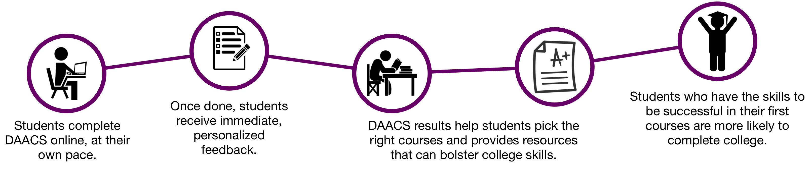
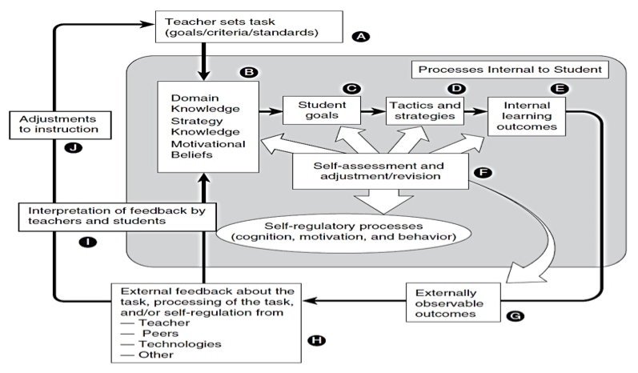

DAACS is a suite of technological and social support to optimize student learning. It provides personalized feedback about students’ strengths and weaknesses in terms of key academic (reading, writing, and mathematics) and self-regulated learning skills, linking them to resources to help them be successful students. DAACS is an open source project and institutions are free to use and adapt DAACS for the specific needs of their students. Please contact us for more information.
DAACS was developed under grants #P116F150077 and #R305A210269 from the U.S. Department of Education. However, the contents do not necessarily represent the policy of the U.S. Department of Education, and you should not assume endorsement by the Federal Government.

About the DAACS Team
Meet the people behind our work
Jason Bryer, Ph.D.
Founder & CEO
Dr. Bryer is currently an Assistant Professor at CUNY's School of Professional Study where he teaches statistics in the Data Science department. In addition to his research on college readiness assessments, Dr. Bryer focuses on visual statistical approaches for teaching and modeling as well as propensity score analysis.
Heidi Andrade, Ed.D.
Founder
Dr. Anrade is Professor at the University at Albany, School of Education. Her research and teaching focus on the relationships between learning and assessment, with emphases on formative student self-assessment and self-regulated learning.
Angela Lui, Ph.D.
Chief Operating Officer
Victor McKenzie
Cheif Technology Officier
Beyond the executive team, countless others have contributed to DAACS in some part from item development, data analysis, scoring, etc. that we are eternally grateful for the help.
Why DAACS? Why Now?
DAACS provides institutions with an alternative, cost effective approach to traditional placement exams and remedial education. Although developed in an online learning environment, personalized feedback regarding college preparation is equally relevant to students studying in a traditional classroom environment.
The inclusion of both academic (i.e. reading, writing, and mathematics) and non-academic (i.e. academic self-regulation, metacognition, motivation, and learning strategies) assessments provides a more complete picture of the students’ abilities. Moreover, this allows for targeted interventions based upon each individual student’s needs.
For academic self-regulation students are provided strategies that research has shown to be most effective for their particular learning and self-regulation style. For instance, students who score high in extrinsic motivation would be provided different feedback and strategies than those who score high in intrinsic motivation.
| Traditional Placement Exam and Remediation | DAACS Innovations |
| For-profit examinations with a per-student cost | An open access tool with no per student fee. |
| Feedback to students is a pass/fail score. Information about items after the assessment are not generally available. | Formative feedback with links to support services, feedback explaining incorrect items, and information for relearning content. |
| Scores may be imported into a student’s record. | Detailed data informs academic advisement, outreach to special populations, recommended learning and support services. Detailed data integrated into predictive analytics. |
| Academic preparedness only in reading, writing, and mathematics addressed | Academic and non-academic preparedness addressed including SRL skills, mathematics, and text anxiety. DAACS is extendible to include other domains as determined by institutions (e.g. science, computer literacy). |
| Credit-bearing study delayed | Early credit-bearing study encouraged utilizing relevant academic support in parallel with for-credit courses. |
| Students pay for courses not leading to credential, financial aid exhausted prior to degree completion | Financial aid is applied to program requirements. |
By capturing both academic and non-academic student data, DAACS has been shown to substantially increase the efficacy of predictive models, allowing institutions to more accurately identify at-risk students and provide targeted outreach.
Components of the DAACS intervention
DAACS has four major components: 1) valid and reliable diagnostic assessments of students’ readiness for college in terms of self-regulated learning, reading, writing, and mathematics; 2) feedback, strategies, and links to open educational resources (OERs) that help students address deficiencies; 3) predictive models that identify students at risk, as well as the specific risk factors; and 4) information that enables academic advisors to help students address deficiencies identified by the assessments.

Evidence of Validity and Reliability
DAACS assesses students in four key domains:
- Self-regulated learning - This newly developed 47 item scale includes subdomains of metacognition, strategies, and motivation.
- Writing - The writing assessment asks students to summarize and identify SRL skills they will utilize as a college student. Students receive feedback on their writing in nine criteria. Essays are machine scored using the LightSide software providing students with feedback within one minute.
- Reading - Items and passages from past New York State Regents examinations were selected. Students then receive feedback at the subdomain and item level.
- Mathematics - Items from past New York State Regents and Massachusetts Comprehensive Assessment System were selected. Students receive feedback at the subdomain and item level.
However, DAACS is extensible so that institutions can exclude domains or include additional assessments as appropriate. DAACS is not meant to place students nor to measure their growth.
DAACS links students to open educational resources (OERs) including the DAACS SRL Lab, Excelsior’s Online Writing Lab, Reading Comprehension Lab, and Math is Fun deemed to be most relevant based upon the student’s individual results.
How does DAACS work?
DAACS returns control over progress toward a degree to the student. Students assess their abilities over the course of 90-120 minutes, a time commitment comparable to current placement exams, and will receive in return a wealth of personalized information reflecting their item responses. Completed as part of the orientation to college, students recognize the helpful, rather than threatening, nature of the questions. The detailed and actionable feedback strengthen the relationship between student and advisor and help faculty provide more individualized and targeted instruction to ensure a successful transition to college. This intervention was based on the Model of Assessment as the Regulation of Learning (Andrade, 2013; see Figure below). This model emphasizes the student as the key player in all feedback processes, including regulating and monitoring progress toward desired goals, as well as interpreting external feedback from teachers, peers, or technology.

Model of Assessment as Regulation of Learning

Publications
Bryer, J., Akhmedjanova, D., Andrade, H. L., & Lui, A. M. (2021). The use of predictive modeling for assessing college readiness. In H. Jiao & R. Lissitz (Eds.), Enhancing effective instruction and learning using assessment data: Theory and practice (pp. 83 – 108). Emerald Publishing Limited.
Bryer, J., Andrade, H. L., Cleary, T. J., Lui, A. M., Franklin, D. W., & Akhmedjanova, D. (2025). The effects and predictive power of the Diagnostic Assessment and Achievement of College Success intervention on academic success indicators. Educational Technology Research and Development, 73, 3067–3104. https://doi.org/10.1007/s11423-025-10547-1
Bryer, J., Andrade, H. L., Cleary, T. J., Lui, A. M., Yu, E. C. Y., & Franklin, D. W. (2026). The effects of the Diagnostic Assessment and Achievement of College Success intervention on freshman GPA and retention [Manuscript submitted for publication].
Cleary, T. J., Bryer, J. M., & Andrade, H. L. (2023). Using the Diagnostic Assessment and Achievement of College Success to promote SRL skills among entry-level college students: Challenges and recommendations. New Directions for Teaching and Learning, 2023(4), 73–79. https://doi.org/10.1002/tl.20551
Cleary, T. J., Yu, E. C. Y., & Bryer, J. (in revision). Examining college readiness profiles among students enrolling in an online college: The importance of leveraging academic skills and self-regulated learning data [Manuscript in revision at Journal of Postsecondary Student Success].
Cleary, T. J., Yu, E. C. Y., & Bryer, J. (2025). Examining college readiness profiles among students enrolling in an online college: The importance of leveraging academic skills and self-regulated learning data. Studying and Self-Regulated Learning American Educational Research Special Interest Group Newsletter.
Franklin, D. W., Andrade, H. L., Bryer, J, & Lui, A. M. (2026), Grit, mindset, and academic outcomes among nontraditional online college students. Journal of Research Initiatives, 9(3), 1-33. https://digitalcommons.uncfsu.edu/jri/vol9/iss3/8
Franklin, D. W., Akhmedjanova, D., Lui, A. M., Andrade, H. L., Cleary, T. J., & Bryer, J. (2019, Fall). SRL Lab announcement. Studying and Self-Regulated Learning American Educational Research Special Interest Group Fall Newsletter, 7. https://ssrlsite.files.wordpress.com/2019/12/newsletter_ssrl-sig_fall-2019.pdf
Franklin, D. W., Bryer, J., Andrade, H. L., & Lui, A. M. (2021). Commentary: Design tests with a learning purpose. Educational Measurement: Issues and Practice. https://doi.org/10.1111/emip.12457
Franklin, D. W., Jr., Bryer, J., Lui, A. M., Andrade, H. L., & Akhmedjanova, D. (2022). The effects of nudges on students’ use of the Diagnostic Assessment and Achievement of College Skills. Online Learning, 26(2), 218–240. https://doi.org/10.24059/olj.v26i2.2674
Lui, A. M., Franklin, D. W., Akhmedjanova, D., Gorgun, G., Bryer, J., Andrade, H. L., & Cleary, T. J. (2018). Validity evidence of the internal structure of the DAACS self-regulated learning survey. Future Review: International Journal of Transition, College, and Career Success, 1(1), 1–18. http://www.futureinstitute.us/wp-content/uploads/2019/03/Future-Review-Online-Article-1.1.pdf
Rosca, O. (2026). Choosing internal-consistency coefficients under dimensionality and model violations: An empirical workflow using SRL survey scores [Manuscript submitted for publication].
Yu, E. C. Y., Lui, A. M., & Akhmedjanova, D. (2021). The Diagnostic Assessment and Achievement of College Skills: A powerful tool for regulation of learning. In A. Reis, J. Barroso, J. B. Lopes, T. Mikropoulos, & C. Fan (Eds.), Technology and innovation in teaching, learning, and education (pp. 193–202). Springer. https://doi.org/10.1007/978-3-030-73988-1
Yu, E. C. Y., Lui, A. M., & Franklin, D. W. (2021, Summer). Using DAACS to foster students’ development of SRL strategies and practices. Studying and Self-Regulated Learning American Educational Research Special Interest Group Summer Newsletter, 13–14. https://ssrlsig.org/2021/08/23/ssrl-sig-2021-summer-newsletter/
Yu, E. C. Y., Lui, A. M., Andrade, H., Akhmedjanova, D., Franklin, D., & Bryer, J. (2026). College students’ responses to automated feedback on self-regulated learning. Educational Assessment. https://doi.org/10.1080/10627197.2026.2727839
Yu, E. C. Y., Rosca, O., Andrade, H. L., Lui, A. M., & Bryer, J. (2025). Predictive validity evidence for a no-stakes, untimed, machine-scored diagnostic writing assessment. Assessing Writing, 66, Article 100978. https://doi.org/10.1016/j.asw.2025.100978
Presentations
Akhmedjanova, D., Lui, A. M., Andrade, H. L., & Bryer, J. (2019, April 4–8). Validity and reliability of the DAACS writing assessment [Paper presentation]. Annual Meeting of the National Council on Measurement in Education, Toronto, ON, Canada.
Andrade, H. L., Bryer, J., & Yagelski, R. (2018). Developing and validating the DAACS writing assessment [Paper presentation]. 16th International Conference of the EARLI Special Interest Group on Writing, Antwerp, Belgium.
Boyer, D., & Harnett, S. (2026, May). Diagnostic Assessment and Achievement of College Skills (DAACS) project: Cost and cost effectiveness study report. Metis Associates.
Bryer, J. (2025, April 9–11). ShinyQDA: R package and Shiny application for the analysis of qualitative data [Presentation]. ShinyConf 2025, Virtual conference.
Bryer, J. (2025, August 2–7). CLAV: R package and Shiny application for cluster analysis validation [Paper presentation]. Joint Statistical Meetings, Nashville, TN, United States.
Bryer, J. (2025, August 8–10). Predictive modeling with missing data [Paper presentation]. useR! 2025 Conference, Durham, NC, United States.
Bryer, J. (2026, April 9–11). Bootstrapping to determine the optimal number of clusters [eBoard presentation]. Annual Meeting of the National Council on Measurement in Education, Los Angeles, CA, United States.
Bryer, J. (2026, March 10). Special k: The science (or art) of finding the optimal k in clustering [Invited talk]. New York Open Statistical Programming Meetup. https://bryer.org/posts/2026-03-10-Special_k.html
Bryer, J., & Andrade, H. L. (2017). Introduction to the Diagnostic Assessment and Achievement of College Skills project [Brown bag presentation]. Department of Educational and Counseling Psychology, University at Albany, Albany, NY, United States.
Bryer, J., Andrade, H. L., & Lui, A. M. (2019). Using diagnostic assessment data to advance student success: Results from the Diagnostic Assessment and Achievement of College Skills project [Invited talk]. Nineteenth Annual MARC Conference, College Park, MD, United States. https://education.umd.edu/research/centers/marc/workshops-and-conferences/2019-marc-conference
Bryer, J., Andrade, H. L., Cleary, T. J., & Lui, A. M. (2018). The Diagnostic Assessment and Achievement of College Skills [Paper presentation]. Distance Teaching and Learning Conference, Madison, WI, United States.
Bryer, J., Andrade, H. L., Cleary, T. J., Lui, A. M., & Franklin, D. W. (2025, April 23–27). The effects of the Diagnostic Assessment and Achievement of College Success intervention [Paper presentation]. American Educational Research Association Annual Meeting, Denver, CO, United States.
Bryer, J., Lui, A. M., Andrade, H. L., Franklin, D. W., & Cleary, T. J. (2019, April 5–9). Efficacy of the Diagnostic Assessment and Achievement of College Skills on multiple success indicators [Roundtable presentation]. American Educational Research Association Annual Meeting, Toronto, ON, Canada.
Bryer, J., Lui, A. M., Foisy, A., & Akhmedjanova, D. (2020, June 8–19). Using the Diagnostic Assessment and Achievement of College Skills to support student success [Workshop]. Association for Assessment of Learning in Higher Education 2020 Annual Conference, Virtual conference.
Bryer, J., Lui, A. M., Fraser, A., & Ferris, J. (2025, April 23–26). Automated scoring of student essays for diagnostic assessments [Paper presentation]. Annual Meeting of the National Council on Measurement in Education, Denver, CO, United States.
Bryer, J., Lui, A. M., Franklin, D. W., & Andrade, H. L. (2022, April 21–26). Efficacy of the Diagnostic Assessment and Achievement of College Skills for traditional-age college students [Poster presentation]. American Educational Research Association Annual Meeting, San Diego, CA, United States.
Bryer, J., Lui, A. M., Andrade, H. L., & Wesling, P. M. (2026, April 11). Free will as an obstacle to randomized controlled trials [Paper presentation]. American Educational Research Association Annual Meeting, Los Angeles, CA, United States.
Bryer, J., Sahin, F., Andrade, H. L., Lui, A. M., Akhmedjanova, D., & Franklin, D. W. (2017, October 18–20). Development of the large-scale diagnostic assessments of college skills [Paper presentation]. Annual Meeting of the Northeast Educational Research Association, Trumbull, CT, United States.
Cleary, T. J., Bryer, J., & Yu, E. C. Y. (2025, April 23–27). Examining college readiness profiles among students enrolling in an online college: The importance of leveraging academic skills and self-regulated learning data [Paper presentation]. American Educational Research Association Annual Meeting, Denver, CO, United States.
de Melo, B., Lui, A. M., & Bryer, J. (2025, August 2–7). AI-generated text detection in the context of domain- and prompt-specific essays: A case study on self-assessment essays [Paper presentation]. Joint Statistical Meetings, Nashville, TN, United States.
Franklin, D. W., & Akhmedjanova, D. (2016, May 11). Overview of the Diagnostic Assessment and Achievement of College Skills [Poster presentation]. 15th Annual Student Poster Session, Educational Psychology and Methodology, University at Albany, State University of New York, Albany, NY, United States.
Franklin, D. W., Andrade, H. L., Bryer, J., & Lui, A. M. (2023, April 13–16). The relationships between grit, mindset, and the academic success of adult students at online colleges [Roundtable presentation]. American Educational Research Association Annual Meeting, Chicago, IL, United States.
Franklin, D. W., Bryer, J., Akhmedjanova, D., Lui, A. M., & Andrade, H. L. (2020, April 17–21). The effects of nudges on students’ use of the Diagnostic Assessment and Achievement of College Skills [Roundtable presentation]. American Educational Research Association Annual Meeting, San Francisco, CA, United States. (Conference canceled)
Franklin, D. W., Lui, A. M., Andrade, H. L., Bryer, J., & Cleary, T. J. (2018, April 13–17). Validity evidence of the internal structure of the DAACS Self-Regulated Learning Survey [Poster presentation]. American Educational Research Association Annual Meeting, New York, NY, United States.
Franklin, D. W., Yu, E. C. Y., Wesling, P. M., Lui, A. M., Bryer, J., & Cleary, T. J. (2025, April 23–27). Examining the predictive power of the Diagnostic Assessment and Achievement of College Skills [Paper presentation]. American Educational Research Association Annual Meeting, Denver, CO, United States.
Garofalo, J., Wesling, P. M., Lui, A. M., Akhmedjanova, D., Andrade, H. L., & Bryer, J. (2025, April 23–27). Students’ responses to diagnostic feedback on their self-regulated learning skills: A qualitative study [Poster presentation]. American Educational Research Association Annual Meeting, Denver, CO, United States.
Garofalo, J., Wesling, P. M., Lui, A. M., Akhmedjanova, D., Andrade, H. L., & Bryer, J. (2025, April 28). Students’ responses to diagnostic feedback on their self-regulated learning skills: A qualitative study [Poster presentation]. Annual Meeting of SUNY Undergraduate Research Conference.
Garofalo, J., Wesling, P. M., Lui, A. M., Akhmedjanova, D., Andrade, H. L., & Bryer, J. (2025, April). Students’ responses to diagnostic feedback on their self-regulated learning skills: A qualitative study [Poster presentation]. Annual Showcase at the University at Albany, State University of New York, Albany, NY, United States.
Harnett, S., Bryer, J., & Andrade, H. L. (2026). Data availability as a design driver: Lessons from a multi-site RCT [Conference proposal]. American Evaluation Association Annual Conference.
Lui, A. M., Franklin, D. W., Yu, E. C. Y., Andrade, H. L., Bryer, J., Akhmedjanova, D., & Cleary, T. J. (2021). Self-regulated learning and academic achievement in online learning by adult learners [Roundtable presentation]. American Educational Research Association Annual Meeting, Virtual conference.
Lui, A. M., Yu, E. C. Y., & Andrade, H. L. (2024, September 19–20). Support for college readiness: Effects of the Diagnostic Assessment and Achievement of College Skills system on GPA [Paper presentation]. National Council on Measurement in Education Classroom Assessment Conference, Chicago, IL, United States.
Pawlo, E., Cleary, T. J., Slemp, J., Waire, J., Bryer, J., & Gambino, T. (2019). Academic success in online colleges: The role of self-regulated learning profiles [Paper presentation]. American Educational Research Association Annual Meeting, Toronto, ON, Canada.
Pawlo, E., Slemp, J., Cleary, T. J., Waire, J., Gambino, T., & Austin, A. (2019, February). Self-regulation in an online classroom: Linking student profiles to success [Paper presentation]. Annual Meeting of the National Association of School Psychologists, Atlanta, GA, United States.
Rosca, O. (2024, July 11–12). Assessing college readiness: Validity evidence for students’ scores from DAACS SRL Survey [Poster presentation]. 2024 DAACS Advisory Meeting, Albany, NY, United States.
Rosca, O. (2024, April 30). Assessing college readiness: Fitting IRT Models to Students’ Scores from Diagnostic Assessments [Poster presentation]. UAlbany Showcase Day 2024, Albany, NY, United States. https://doi.org/10.13140/RG.2.2.21181.99041
Rosca, O., Colvin, K. F., Andrade, H. L., & Bryer, J. (2023, April 13–15). Reliability coefficients for a single-administration linear assessment [eBoard presentation]. NCME 2023 Annual Meeting, Chicago, IL, United States. https://doi.org/10.13140/RG.2.2.22756.45447
Rosca, O., Lui, A. M., Colvin, K. F., Andrade, H. L., & Bryer, J. (2025, April 23–26). Assessing college readiness: Internal structure validity evidence for multistage diagnostic reading assessment [Paper presentation]. NCME 2025 Annual Meeting, Denver, CO, United States.
Slemp, J., Panish, D., Pawlo, E., & Cleary, T. J. (2019, February). Improving interventions: Development of the implementer perception of intervention survey [Poster presentation]. Annual Meeting of the National Association of School Psychologists, Atlanta, GA, United States.
Slemp, J., Pawlo, E., Cleary, T. J., Sharoupim, N., & Gambino, T. (2019, April). Evaluating implementer perceptions of an assessment-to-feedback system through thematic analysis [Paper presentation]. American Educational Research Association Annual Meeting, Toronto, ON, Canada.
Wesling, P. M., Lui, A. M., Garofalo, J., Akhmedjanova, D., Andrade, H. L., & Bryer, J. (2026, April 8–12). College students’ responses to feedback from a diagnostic assessment of self-regulated learning [Paper presentation]. American Educational Research Association Annual Meeting, Los Angeles, CA, United States.
Wesling, P. M., Lui, A. M., Garofalo, J., Akhmedjanova, D., & Andrade, H. L. (2026, April 9–11). Students’ responses to feedback on a diagnostic assessment of self-regulated learning: A theory of action [eBoard presentation]. Annual Meeting of the National Council on Measurement in Education, Los Angeles, CA, United States.
Yu, E. C. Y., Andrade, H. L., Franklin, D. W., Lui, A. M., & Bryer, J. (2025, April 23–27). Fortunately, talk is cheap: Commitment language is associated with academic success in college [Roundtable session]. American Educational Research Association Annual Meeting, Denver, CO, United States.
Yu, E. C. Y., Andrade, H. L., Lui, A. M., Franklin, D. W., Akhmedjanova, D., Bryer, J., & Garofalo, J. (2024, April 11–14). Strength of commitment to self-regulated learning and first-year college outcomes [Work-in-progress roundtable session]. American Educational Research Association Annual Meeting, Philadelphia, PA, United States.
Yu, E. C. Y., Lui, A. M., Andrade, H. L., Franklin, D. W., Akhmedjanova, D., & Bryer, J. (2023, April 13–16). College students’ responses to automated feedback on self-regulated learning [Paper presentation]. American Educational Research Association Annual Meeting, Chicago, IL, United States.
Yu, E. C. Y., Rosca, O., & Andrade, H. L. (2022, August 4–6). Predictive validity evidence for machine-scored diagnostic writing assessment [Poster presentation]. APA 2022 Convention, Minneapolis, MN, United States. https://doi.org/10.13140/RG.2.2.33240.98566/2